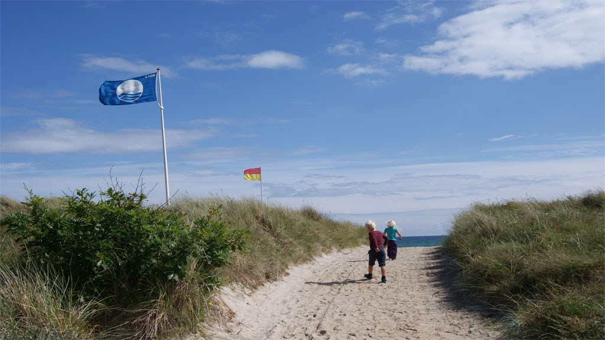
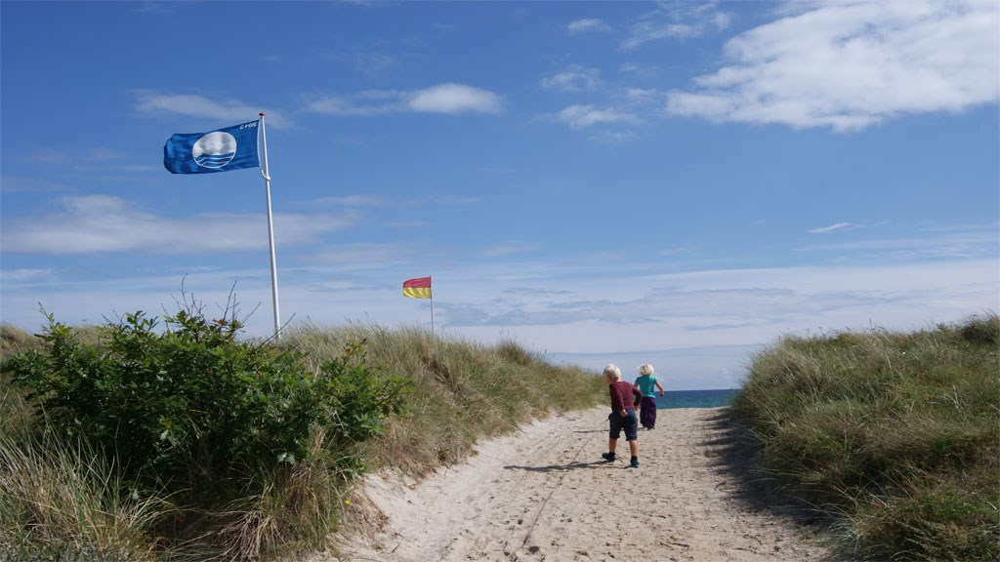

Smuk Natur
Her ka du se den smukke natur vi tilbyder.

 

Om Grenaa Strand
Danmarks næstbedste strand! Stranden ligger syd for Grenaa Havn og er egentlig to strande, adskilt af Polderrevet, som er et meget velbesøgt fiskested med hornfisk og ørreder. Stranden, nærmest havnen, ligger med sommerhuse i klitten og er meget børnevenlig med lav vanddybde og det fineste sand. Sommeren igennem kan man bruge beachvolleybanen og deltage i mange aktiviteter. Stranden har udsigtsplads, som er velegnet for folk med handicap, og hvor familien kan hygge sig med madkurven. I sommerferien er der redningstårn med kystlivreddere på stranden. Længere mod syd, med flot udsigt mod Havknuden, ligger så stranden, der er udpeget til Danmarks næstbedste. Går man et par kilometer, har man en rigtig flot strand helt for sig selv. Sådan en strandvandring er et besøg værd hele året.